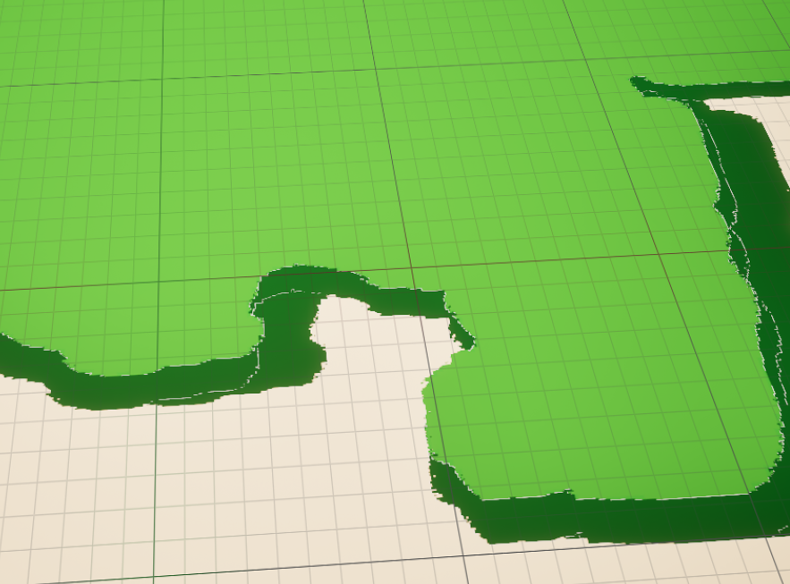
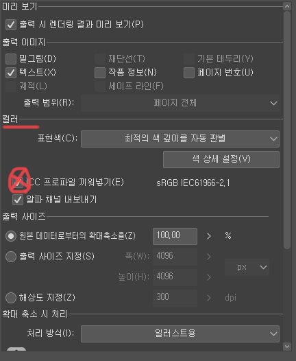
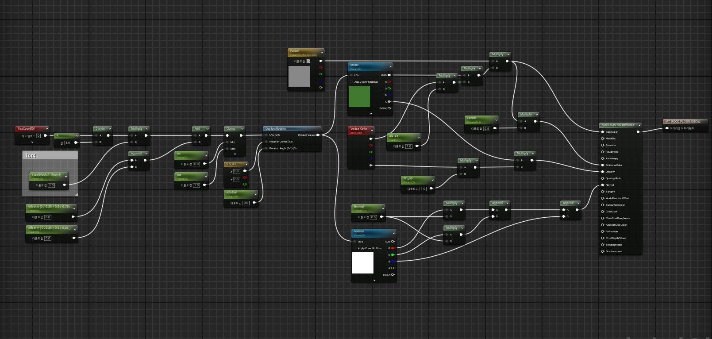

블루프린트에서 여러 텍스처를 섞어 사용할 때 가장 먼저 확인한 부분은 반복 경계와 흰 줄처럼 보이는 이음새였습니다.
문제는 텍스처 자체보다 UV와 샘플링 방식에서 생기는 경우가 많아, 머티리얼 단계보다 먼저 기준 데이터를 정리했습니다.

블루프린트에서 여러 텍스처를 섞어 사용할 때 가장 먼저 확인한 부분은 반복 경계와 흰 줄처럼 보이는 이음새였습니다.
문제는 텍스처 자체보다 UV와 샘플링 방식에서 생기는 경우가 많아, 머티리얼 단계보다 먼저 기준 데이터를 정리했습니다.

해결 방식
블루프린트에서 타일 밀도와 방향값을 분리해 제어하고, 가장자리 보정용 파라미터를 따로 두어 상황별로 빠르게 대응했습니다.
이 구조를 만들어 두면 동일한 머티리얼을 다른 프롭이나 바닥 메시에 재사용하기가 훨씬 쉬워집니다.

최종적으로는 데칼과 기본 텍스처가 겹쳐도 경계가 튀지 않도록 조정했고, 씬 전체 톤을 해치지 않는 범위에서 대비만 남겼습니다.